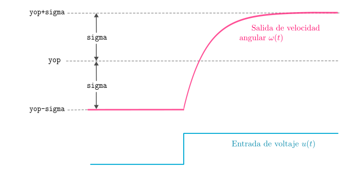

get_model_step
DCMotor.get_model_step — Function
get_model_step(sys::MotorSystem; yop=400, sigma=100, usefile=false)Estima, mediante la respuesta al escalón, un modelo dinámico de primer orden con retardo FOTD (del inglés, First Order plus Time Delay), el cual relaciona la velocidad ángular del motor y el voltaje de entrada. El modelo FOTD está representado por la siguiente función de transferencia:
$G(s) = \dfrac{\alpha}{\tau s + 1} e^{-Ls}$
donde $\alpha$ es la ganancia del sistema, $\tau$ es la constante de tiempo y $L$ es el retardo.
Para estimar este modelo, se aplica un escalón de voltaje cuyos valores se ajustan automaticamente para que el punto de operación en velocidad angular especificado, yop (en °/s), quede aproximadamente centrado, como se muestra en la siguiente figura:

Los parámetros de esta función son los siguientes:
Argumentos
sys::MotorSystem: objeto que representa la plataforma.
Argumentos de palabra clave
yop::Real=400: punto de operación (velocidad angular, en °/s) alrededor del cual se obtiene el modelo FOTD. La respuesta al escalón queda aproximadamente centrada alrededor deyop.sigma::Real=100: desviación máxima (y minima) estimada de la salida en relación al punto de operaciónyop. La función asigna automáticamente (mediante de la funciónvolts_from_speed) los valores inicial y final del escalón de entrada para que la salida se desvie aproximadamentesigmadel punto de operaciónyop.usefile::Bool=false: si estrue, se usan los datos del último experimento, guardados endatafiles/DCmotor_step_open_exp.csven lugar de ejecutar uno nuevo.
Retorna
G::ControlSystemsBase.TransferFunction: modelo continuo de primer ordenb/(s+a)para la velocidad angular, equivalente aα/(τs+1)conb = α/τya = 1/τ. Retorna así por compatibilidad con las otras funciones.L::Float64: retardo estimado, en segundos.
Notas
- El retardo
Ly la constante de tiempoτse ajustan por mínimos cuadrados a partir de los tiempos de cruce de respuesta en los niveles 10 %, 15 %, 20 %, 30 % y 50 % del valor de estado estacionario. La ganancia estáticaα = Δy/Δuse calcula directamente de los valores estacionarios antes y después del escalón. - Se muestra una gráfica comparando la salida experimental con el modelo simulado, y se guardan los parámetros en
datafiles/DCmotor_fo_model.csv.
Ejemplo
Primero, asegúrese de haber importado el paquete DCMotor y de haber definido el sistema, así:
using DCMotor
sys = MotorSystem();Es recomendable, al usar por primera vez la plataforma en una sesión, obtener el modelo estático para que haya una buena calibración del punto de operación, así:
G, L = get_static_model(sys);Luego, obtenga el modelo FOTD a partir de la respuesta al escalón así:
G, L = get_model_step(sys; yop=360);